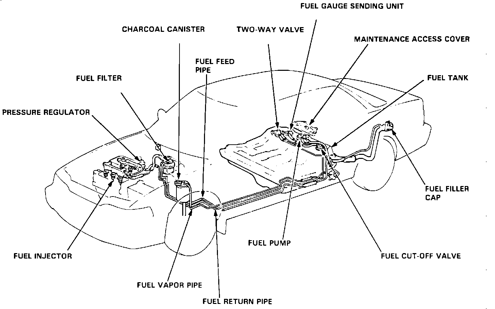

Fuel Supply Line: Description and Operation
Fuel Delivery System:

The fuel supply line carries fuel from the fuel pump discharge port to the injection manifold. It is routed under the left side of the chassis from the fuel tank to the injection manifold. The fuel supply line is a steel bundy-pipe style and is referred to as a fuel supply pipe in the illustration.